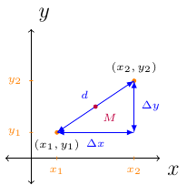

Section 2.1
Change, Distance, Midpoint
Let \((x_1,y_1)\) and \((x_2,y_2)\) be any two points on the \(xy\)-plane. The following image will be used:

The change in \(x\) is \(\Delta x = x_2 - x_1\).
The change in \(y\) is \(\Delta y = y_2 - y_1\).
The distance between the two points is \(d=\sqrt{(\Delta x)^2+(\Delta y)^2}\).
The midpoint, \(M\), is \(\left( \frac{x_1+x_2}{2},\frac{y_1+y_2}{2}\right)\).
Definition 2 (Collinear)
Given three points \(A\), \(B\), and \(C\). Let \(d(A,B)\) denote the distance point \(A\) is away from point \(B\) (using the distance formula).
If \(d(A,B)\le d(B,C) \le d(A,C)\) and \(d(A,B)+d(B,C) = d(A,C)\), then we say \(A\), \(B\), and \(C\) are collinear. Otherwise, we say the points are not collinear.